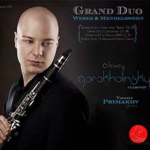
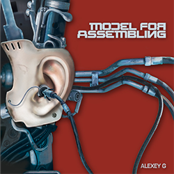
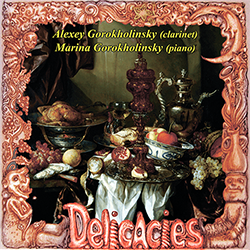
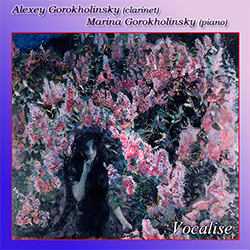
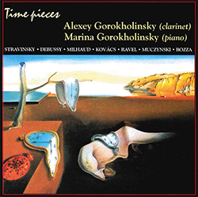

“Every once in a while we are presented with a revolutionary idea that requires attention, and pushes the boundaries of what is possible in our field. We might very well have found this now, by way of Alexey G.”
Wesley Ferreira – Clarinet Magazine
Alexey Gorokholinsky is an accomplished clarinet virtuoso, audio engineer and electronic music producer. Graduate of the Juilliard School and fellow of Carnegie Hall’s ensemble “CONNECT”, Alexey stays relentless in pushing the boundaries of his instrument as well as the new music for electronics and live instruments.
Education and Awards
A native of Russia, Mr. Gorokholinsky began his musical studies at age 5 on the piano. At age 7, he took up the clarinet, studying with his father, Valery Gorokholinsky, an accomplished orchestral and solo clarinetist. At age 15, he came to United States to attend the Idyllwild Arts Academy (CA) and then The Juilliard School, where he was a full scholarship student. During his freshman year at Juilliard, he made his New York City debut at Alice Tully Hall, performing the Nielsen Clarinet Concerto with the Juilliard Orchestra. He was also a top prize winner of the Eastern Connecticut Symphony Orchestra, Jefferson Symphony, first annual Buffet Crampon, International Clarinet Association and Spotlight Awards competitions.
Classical Record Releases
During his college years, Alexey has recorded most of clarinet-piano repertoire including some of his own arrangements of virtuosic violin pieces. His 2009 CD “Delicacies” became very popular due to such virtuosic arrangements. The CD features works of such composers as Bazzini, Paganini, Tchaikovsky, Francaix, Rachmaninoff, and others. Two previous discs, released while he was still in school, covered masterpieces of the clarinet repertoire by Brahms, Schumann, Chausson, Saint-Saens, Debussy, Milhaud, Muczynski, Ravel, Stravinsky, and others. He was accompanied on all three CDs by his mother, Marina Gorokholinsky, a student of legendary pianist Victor Merzhanov.His most recent CD “Grand Duo” was the first CD that was recorded in United States and fully engineered by Alexey himself. It features works by Weber and Mendelssohn and was recorded with pianist Vassily Primakov, owner of the label “LP Classics”.
Electronic Clarinetist
Currently, Alexey is often busy writing and performing new creative and dance-like electronic music with clarinet under both his real name and his alias “Kronodigger”. His works combine forms of modern day genres of electronic music, such as UK Dubstep, Techno, Drum & Bass, Ambient and IDM with challenging classical parts for live instruments. As a child of the end of 20th century, Alexey takes his influences from music that had a breakthrough in the past 30 years of the 20th century, as well as everything new that seems to amuse the audiences of today. Listening to broadcasts of Russian pirate radio station dedicated to electronic music back in early 90s introduced him to artists that were pioneering the electronic music scene from its start (Vangelis, Tangerine Dream, Kraftwerk, Brian Eno) as well as artists that were pushing the new boundaries at the end of the century (Aphex Twin, The Orb, The Prodigy, Squarepusher, Amon Tobin). Meanwhile, being involved with many New York and world-wide based DJs lets him stay up to date with the most current “hot” trends and techniques of the electronic music world of today.Alexey Gorokholinsky releases his music under both his name and his alias “Kronodigger”. The latter has seen 2012 release of three remixes on music from video game series “Legend of Zelda”, 2015 release of EP “Subliminal Design”, 2016 release ENC015 on label Encrypted Audio, and a new upcoming collaboration self-titled release "TROP” on label Encrypted Audio as well.
Alexey has been working for years on composing dance-oriented and creative electronic music with virtuosic clarinet lines. He creates absolutely cool new repertoire for 21st century clarinetists and presents a full recital program of compositions for clarinet and electronics that take its influence from such established genres of electronic music as UK Dubstep, Drum & Bass, Techno, Ambient, IDM, Experimental, Traditional, and many other classified and unclassified soundscapes.
| ALBUM COVER | ARTIST | ALBUM TITLE | INFO |
|---|---|---|---|
|  | Alexey Gorokholinsky pianist - Vassily Primakov |
Grand Duo |
Composers: C.M. von Weber, F. Mendelssohn Label: LP Classics Genre: Classical Release Date: Mar 13, 2015 Listen on iTunes |
|  | Alexey G | Model for Assembling |
Composers: Alexey Gorokholinsky Label: Self-Released Genre: Electronic/Classical Release Date: Aug 22, 2011 Listen on iTunes |
|  | Alexey Gorokhkolinsky and Marina Gorokholinsky |
Delicacies |
Composers: Rimsky-Koraskov, Tchaikovsky, Kovacs, Bazzini, Paganini, Rachmaninoff, Debussy, Francaix, Bozza, Prokofiev Label: Self-Released Release Date: Jan 26, 2009 Listen on iTunes |
|  | Alexey Gorokholinsky and Marina Gorokholinsky |
Vocalise |
Composers:Schumann, Saint-Saens, Chausson, Brahms, Verdi/Lovreglio, Rachmaninoff Label: Self-Released Genre: Classical Release Date: 2005 Listen on iTunes |
|  | Alexey Gorokholinsky | Time Pieces |
Composers:Stravinsky, Debussy, Milhaud, Ravel, Kovacs, Muczynski, Bozza Label: Classical Records Genre: Classical Release Date: 2002 Listen on iTunes |